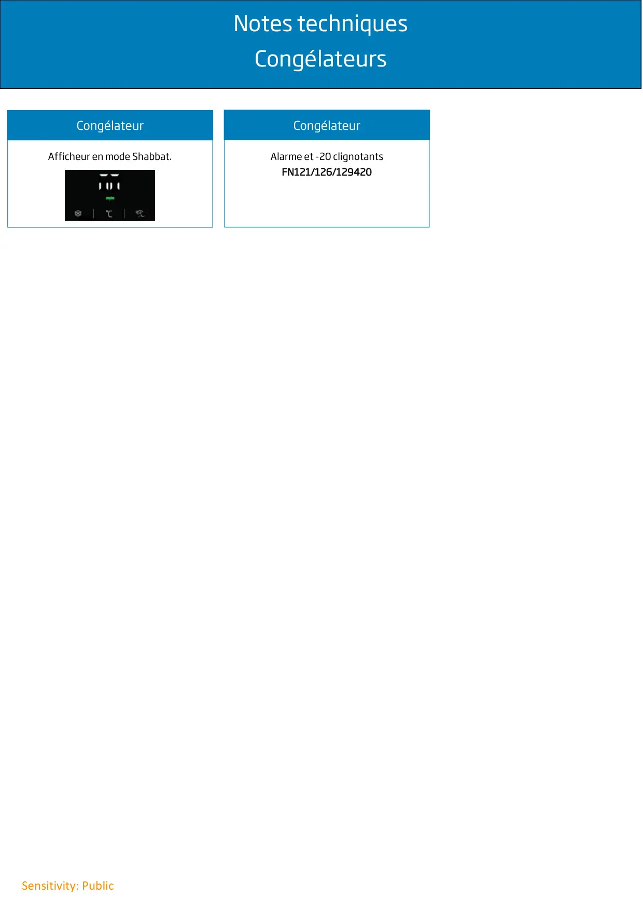

Infos techniques congélateur

Notes techniquesCongélateursSensitivity: PublicCongélateurAfficheur en mode Shabbat.CongélateurAlarme et -20 clignotantsFN121/126/129420
1 / 1


Gros électroménager
Ressources techniques SAV — Beko · Grundig · Whirlpool · Hotpoint · Indesit.
